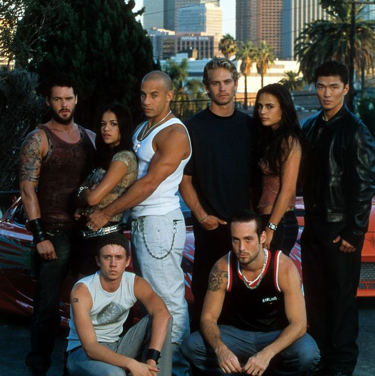
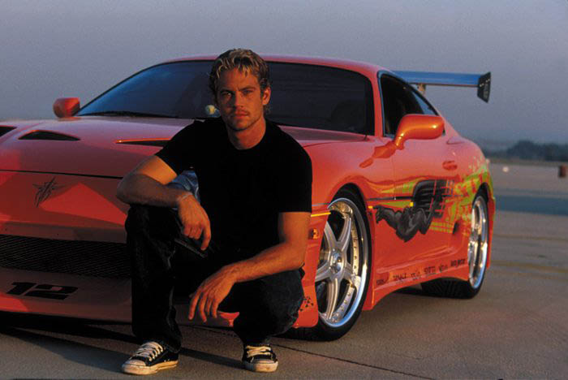
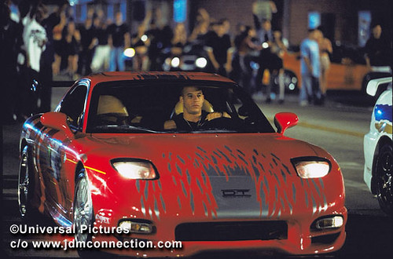
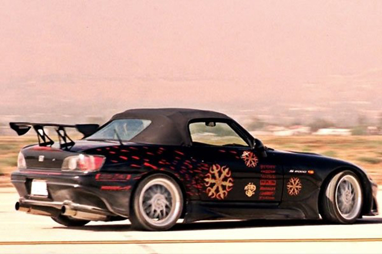

The Fast and the Furious 2001
The first film was released in 2001, which began the original tetralogy of films focused on illegal street racing and culminated in the film Fast & Furious (2009). The series transitioned towards heists and spying with Fast Five (2011) and was followed by five sequels, with the most recent, Fast X, set for release in 2023, is the final film that will conclude the series. The main films are collectively known as The Fast Saga.
Universal expanded the series to include the spin-off film Fast & Furious Presents: Hobbs & Shaw (2019), while its subsidiary DreamWorks Animation followed this with the animated streaming television series Fast & Furious Spy Racers. Soundtrack albums have been released for all the films, as well as compilation albums containing existing music heard in the films. Two short films that tie into the series have also been released.
The series has been commercially successful; Universal's biggest franchise, it is the eighth highest-grossing film series, with a combined gross of over $6 billion.Critical reception for the first four films were mixed to negative until the fifth and later films, which were more mixed to positively received. Outside of the films, Fast & Furious has been the focus of other media, including attractions at Universal Studios Hollywood and Universal Studios Florida, live shows, commercials, many video games and toys. It is considered the vehicle that propelled lead actors Vin Diesel and Paul Walker to stardom.
Cars in Film
Paul Walker Toyota Supra MK IV
Following the destruction of Brian's Mitsubishi Eclipse was destroyed by Johnny Tran and his group, he asked his commanding officer, Sergeant Tanner for another car to repay Dominic Toretto with. When he arrives to Dominic's garage, he brings the Toretto's a rusted Supra taken from a junk yard. Dominic and his friends spent about $15,000-$20,000 on restoring it. In reality, they actually spent over $100,000.
When they're done the car is so fast it's able to smoke a Ferrari in a street race. Towards the end of the movie Brian and Mia Toretto use the Supra to rescue Vince from the semi-truck. Brian later uses the Supra to chase down Johnny Tran and his cousin Lance through the suburbs of Los Angeles when they do a drive by at 1327, killing Jesse.
Brian shoots Tran in the back causing him to fall off his bike, killing him. He tells someone in a car to call 911 and meets up with Dom at a red light. Dom tells Brian how he used to drag there during high school and when the light turns green he's going for it. They both rev their engines and when the light turns green they step on the gas, using the rail road track down the road as a finish line.
They both hear a train coming and step on it. Right as the train passes they dodge it with only a few feet between them and the train. Just as everything is calm a semi-truck comes out of a corner causing Dominic to crash into it. It sends his 1970 Dodge Charger R/T flying in the air, and crashes. the car flips a few times before it stops. Brian then gets out of the car and runs to Dominic
Vin Diesel Mazda RX-7
Dominic Toretto drove a red 1993 Mazda RX-7 FD in the race with Brian O'Conner, Danny, and Edwin. During the race, Brian in his Mitsubishi Eclipse tries to gain the advantage by using nitrous but Dominic uses his nitrous as well and easily beats him. When the police arrive everyone flees: Dominic drives away his RX-7 to a parking garage and parks the car before fleeing on foot. Dominic apparently retrieved the car because it is seen at Dominic's house when Dom drives Brian to see his Dodge Charger and again at Race Wars near Dom's trailer. A white RX-7 is seen driven by another racer who Letty races against at Race Wars.
This FD was designed after a Keith Imoto car, and originally came with a roll cage. Unfortunately, Diesel couldn't fit into the car with the roll cage, so it had to go. It had a stock twin-turbo 255hp engine with 4-bottle NOS system, stock suspension, and aluminum struts. Appearance mods include VeilSide USA Aero bodykit, RX-7 GT rear wing, Lexan headlight covers, and VeilSide rims.
Honda S2000
Johnny Tran's S2000 appears parked in Tran's garage when Brian, Dom and Vince break in to check out their vehicles, Dom noticing that the car lacks an engine. During Race Wars, Tran bet the pink slip of his S2000 against Jesse's for his Volkswagen Jetta. Brian O'Conner speculated that the S2000 had at least $100,000 worth of upgrades under it hood during his attempt to dissuade Jesse from betting his Jetta, as he was aware that Tran had a premium Nissan SR20 engine. Tran's S2000 was able to beat Jesse's Jetta with the use of NOS.
In the original screenplay, Tran (back then named "Pete Tran") was intended to drive a Mustang GT. However, this was rejected because the Mustang was not a popular car among the Asian tuner crowd. Since the producers wanted a black car, as "bad guys get black cars in movies", when it was discovered that de Vera owned a black S2000, a deal was struck with him.